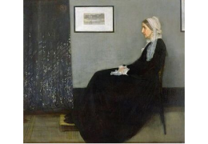
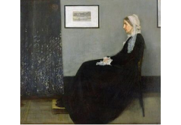
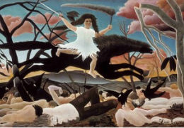
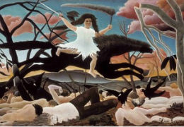
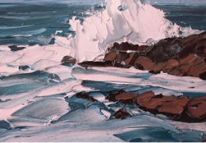
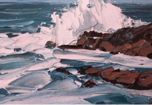

보다쌤의 성향분석
나는 세상을 있는 그대로 그려내는 전략가!!
외부(E)와 내면(I)
표현주제미술활동에서 ‘표현주제’를 선택하는 개인의 성향을 나타냅니다. 세상을 나와 내가 아닌 것으로 구분할 수 있다면, 그림의 주제 역시 나와 내가 아닌 것으로 구분할 수 있을 것입니다. 작품을 통해 주관적인 나의 이야기로 소통하고 싶다면 내면성향, 내가 아닌 보다 객관적인 이야기로 소통하고 싶다면 외부성향에 가깝습니다.
‘외부’ 성향은 사회적, 역사적 이야기 등 내가 아닌 바깥 세계에 대한 내용을 그림의 주제로 선택하여 표현하려는 성향입니다. 말과 글이 아닌 시각적 요소를 활용하여 의미를 전달하는 체계(system)를 ‘시각 언어’라고 부르는데, ‘외부’ 성향을 가진 창작자는 미술활동 안에서 시각언어를 활용해 내용을 객관적으로 전달하고 소통하는데 관심을 보입니다.
재현(R)과 추상(A)
구성방식개별적인 것과 보편적인 것이 있습니다. 예를 들어, 현정, 은주, 민재, 서영, 승민은 모두 ‘개별’ 사람이면서 동시에 인간이라는 ‘보편’ 개념 안에 속해 있습니다. 그리고 우리는 개별 사람은 본 적이 있지만, 인간 자체는 본 적이 없습니다. 개별자는 관찰이 가능하지만, 보편자는 관찰이 불가능한 것입니다. 때문에 눈에 보이는 ‘개별’적인 것은 무언가를 관찰해서 따라 그리는 ‘재현’을 통해 표현이 가능하며, ‘보편’은 보이지 않는 무언가를 표현하기 위해 ‘추상’의 방법을 사용합니다.
‘재현’은 대상의 형태와 특징을 있는 그대로 표현하려는 성향입니다. 관람자는 화가의 모사(모방하여 따라 그리는 것)를 통해 표현 대상을 구체적인 형태로 지각하고 경험합니다. 창작자는 표현할 대상을 경험하지 못했거나, 현재 관찰할 수 없다 하더라도 얼마든지 재현할 수 있습니다. 과거의 이야기이든 상상의 이야기이든 화가는 관람자의 눈 앞에 현재(present)하는 것처럼 사실적으로 그려낼 수 있기 때문입니다. 사진이 존재하지 않았던 시기에는 이러한 미술 작품이 사진의 역할을 대신 하였습니다. 현재하지 않는 것이 창작활동을 통해 ‘다시’ 현재할 수 있다(RE-present)면 그것을 재현이라고 말합니다.

 

자연(N)과 장식(D)
자연스러운 것과 장식적인 것은 상대적인 것이라 명확하게 구분하기는 어렵습니다. ‘비교적’ 자연스러운 것과 ‘비교적’ 장식적인 것이 있을 뿐입니다. 다만, 자연스럽다고 느끼는 그림들의 공통적인 특징을 발견할 수 있고, 장식적이라고 느끼는 그림들의 주된 특징을 발견할 수 있다면, 창작자는 그것을 통해 자신이 선호하는 표현양식을 선택할 수 있습니다.
주변 세계를 경험적 관찰을 통해 정확하게 표현하려는 성향입니다. 관찰과 정확한 표현, 사실적인 묘사라는 측면은 재현과 비슷한 부분분이지만, ‘자연스럽다’는 것은 경험된 것을 꾸미지 않고 ‘있는 그대로 그린다’는 느낌이 강합니다. 완전한 자연주의자라면 없는 것을 인위적으로 만들거나 수정, 보완하는 것을 비교적 선호하지 않을 것입니다. 있는 그대로의 아름다움을 발견하고 표현한다면 그것만으로도 좋은 작품이 되기 때문입니다.
인지(C)와 정서(S)
인지와 정서는 세상과 소통하는 두 개의 거울입니다. 인지는 머리의 거울, 정서는 마음의 거울입니다. 머리에 거울이 없다면 본 것을 떠올릴 수 없고, 마음에 거울이 없다면 본 것을 느낄 수 없습니다. 이 두 거울은 사람마다 생긴 것이 조금씩 다르며, 심지어 각자 다른 방식으로 활용합니다. 때문에 같은 미적대상을 대하더라도 모두가 똑같이 바라보지 않고, 모두가 똑같이 느끼지 않는 것입니다.
미술(美術)은 문자 그대로 해석하면 ‘아름다움을 표현하는 기술’입니다. 그러나 종종 우리는 작품 안에서 화가의 화려한 기술이 아닌, 숨겨진 의미나 내용을 발견하는 경우가 있습니다. 창작자가 의도하여 관람자에게 사고작용를 불러 일으킬 수도 있고, 창작자의 의도는 아니지만 관람자의 감상과정에서 의미나 사고작용이 생겨날 수 있습니다. 창작 또는 감상의 과정에서, 이렇듯 미술적 주제에 대해 사유하며 생각을 불러 일으키는 작품을 선호한다면 ‘인지’적 성향이라고 할 수 있습니다.
본 결과는 검사를 실시하는 시점의 경향성을 분석한 것으로, 평생 지속되는 것으로 단정할 수 없으며 학습과 훈련, 성장과정 안에서 변화할 수 있습니다. 미술학습분석(ALA)의 전문가 비평과 분석을 통해 개인의 미술 특성을 보다 자세히 파악할 수 있으며, ooo님에게 적합한 학습방향을 설계할 수 있습니다.
ooo님이 선택한 작품들을 다시 한 번 감상해 보세요!
아래는 ooo님이 선택한 작품들입니다. ooo님의 성향이 잘 반영되어 있나요? 오늘 저녁에 무엇을 먹을지 우리의 입맛에 정답이 없는 것처럼, 오늘 어떤 이미지를 선택할지에 대한 시각적 입맛에도 정답은 없습니다. 입맛이 변해가는 것처럼, 이미지를 선택하는 성향 역시도 앞으로 얼마든지 변할 수 있습니다. 저작권 문제로 검사지에 넣을 수 없었던 현대미술 작품들을 찾아서 함께 감상해보세요. 다양한 현대미술을 통해 여러분의 미적성향을 다시 한 번 확인해보는 것도 즐거운 경험이 될 것입니다.
 

 
